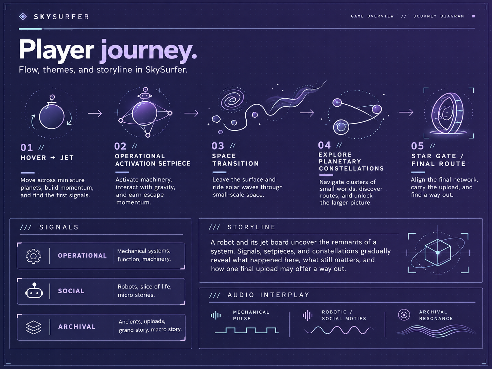

One final
delivery.
A delivery robot awakens from an age-long slumber, its memory corrupted and its purpose all but forgotten. Only one fragment remains: a call to complete one final delivery.
To uncover what became of the Ancients, it must explore forgotten worlds, piece together scattered signals, and seek out the few robots still carrying out their ancient routines. Along the way, dormant relics hold the key to crossing the vast distances between worlds.
With no memory of its destination, and no knowledge of what awaits, the robot follows a mysterious calling across the stars.
